Portfolio HCI Marissa Hoekmeijer
Visual Enviroment workshop
In deze workshop gaan we aan de slag met virtuele werelden. Hierin gaan we werken met het programma Unity. In dit programma kunnen we in het kort gezegd echt games maken en zelfs uittesten. We krijgen hierin de opdracht om 2 tutorials van de 4 gegeven microgrames uit Unity te volgen en maken. Zo om kennis te maken met het maken van games
Microgame Lego
In deze microgame kan je verschillende eilanden, objecten, obstakels, vijanden en ga zo maar door, bouwen voor jou lego figuur om doorheen te wandelen en uiteindelijk het winnende blok te bereiken. In deze tutorial heb ik verschillende dingen aangepast, zoals het toevoegen van een platform, vijand, platformen. Ook heb ik functies toegevoegd, waardoor een blok tegen je ging praten of er muziek werd afgespeeld. Super tof om te doen!
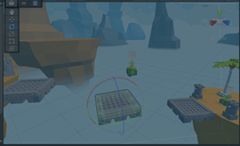 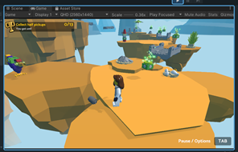 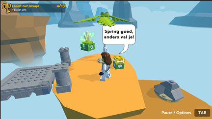Microgame Karting
In de microgame karting zet je een race parcour op, waarin je meerdere laps kan rijden en objecten moet vermijden of juist niet! Zo om als eerste over de finish te gaan! In deze microgame ben ik bezig geweest met het aanpassen van de kleur van het wagentje, toevoegen van een halfpipe en zijn snelheid en nog veel meer kleine dingen. Super leuk om een eigen race game in elkaar te zetten!
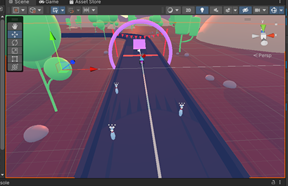Microgame Lego Advanced
In deze workshop werd er van ons gevraagd om minimaal 1 advanced opdracht uit te voeren. Hierin heb ik ervoor gekozen om verder te gaan met de aanpassingen van mijn micro lego game. Hierin heb ik super veel meer objecten en functie toegevoegd! Ik heb nieuwe vijanden gemaakt, een functie gemaakt zodat de brug opgeblazen kan worden, extra spraak toegevoegd, eilanden gekopieerd en erbij gemaakt, zo om meer loop ruimte te creëren! Het titel scherm heb ik kunnen aanpassen in kleur, maar ook de omgeving is nu meer roze en donker! Het tofste van alles is dat ik door heb gekregen hoe verschillende scene’s in elkaar zitten en zo heb ik een level 2 erbij kunnen maken! Ook mijn speel figuur heb ik omgewisseld. Als kers op de taart heb ik een bestuurbaar platform gemaakt! Onwijs gaaf om een lego game uit te kunnen breiden en zelf te kunnen creëren. Veel van geleerd!
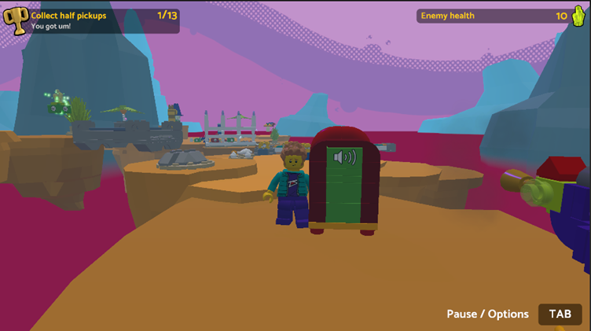 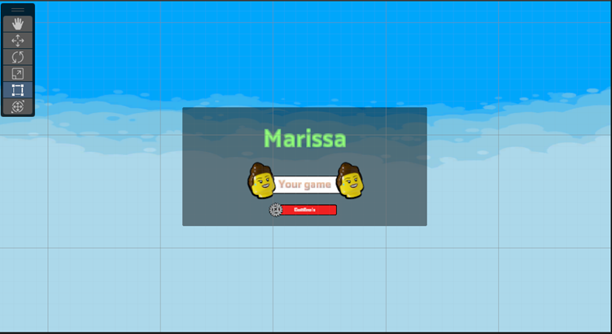 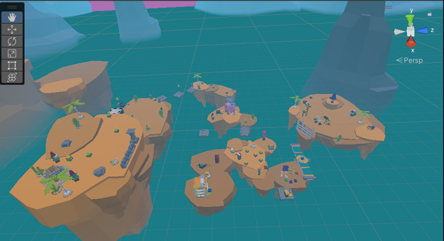 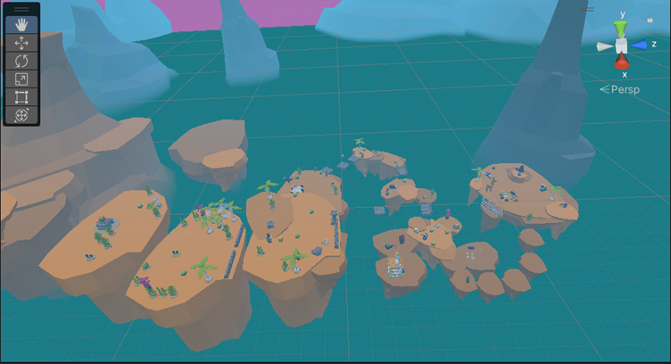A-frame
In de A-frame opdracht hebben wij een bestand van BlackBoard moeten downloaden en deze vervolgens op github moeten uploaden. Hierna konden we het bestand via een url openen, waarna we op linkjes konden klikken die ons leiden naar een 3D wereld. In Github hebben we aan de hand van opdrachten verschillende aanpassingen gemaakt in deze bestanden en zo onze eigen 3D wereld gecreëerd.
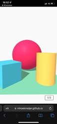Opdracht 1
Bij opdracht 1 zijn we begonnen met het maken van vormen en het aanpassen van hun attributen. Attributen zoals kleur, hoogte, breedte, maar ook posities waaronder je ze kan draaien. Ik heb uiteindelijk een paar eigen vormen erbij gemaakt en gepositioneerd naast elkaar.
Opdracht 2
In opdracht twee kregen we oefeningen om een image met textuur toe te voegen aan een object. Hierin ging het om hout op de box en gras op de ondergrond.
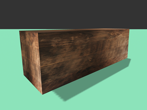 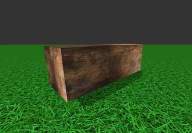Opdracht 1
in opdracht 3 zijn we aan de slag gegaan met de animatie op de blokken. Zo zijn we waardes gaan toevoegen en gaan veranderen, waardoor het blok is gaan draaien of bewegen.
Er is een korte video van de werking toegevoegd, maar u kunt het zelf ook live bekijken via:
Klik hier
De hele opdracht met aanpassingen is terug te vinden via:
Klik hier voor code
Klik hier voor de werking ervan